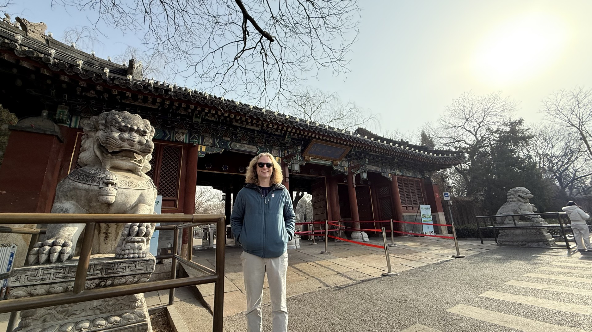
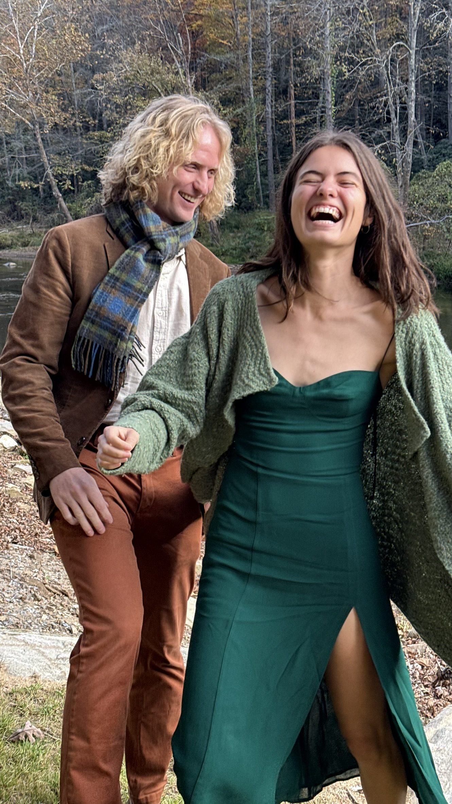
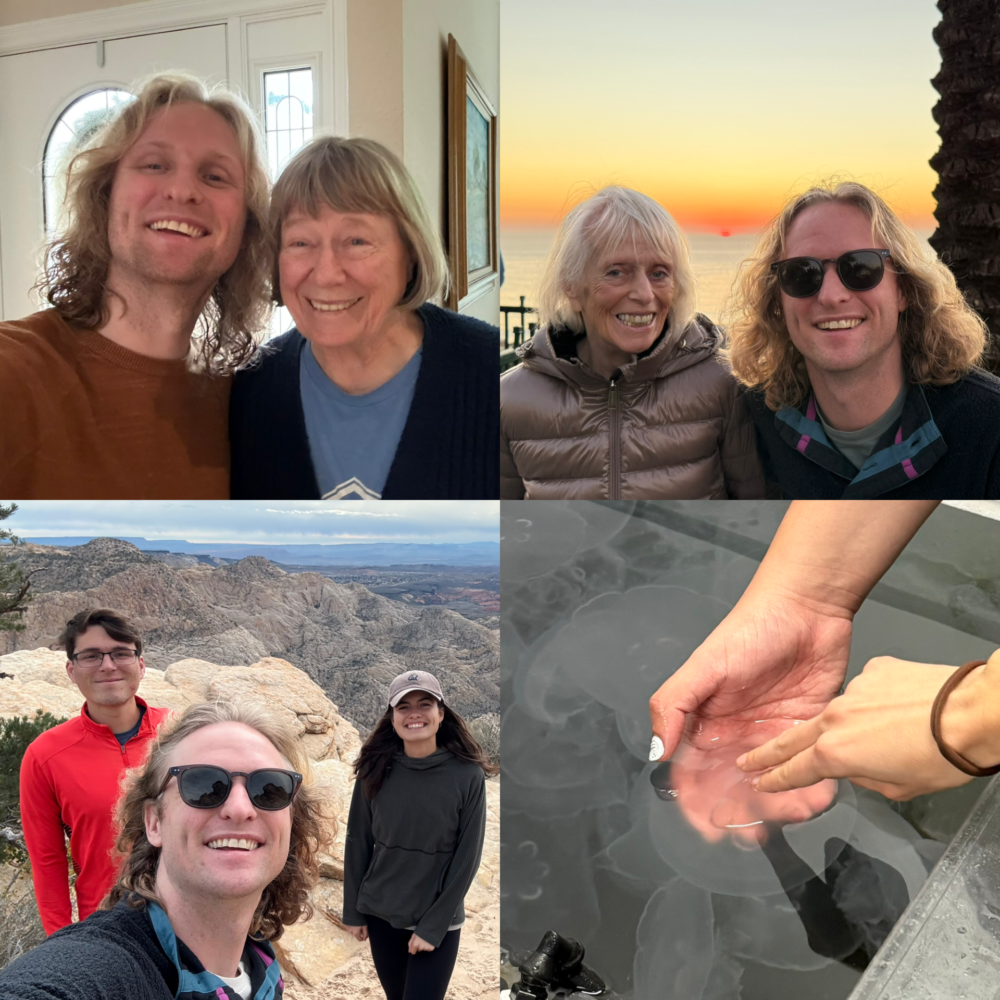
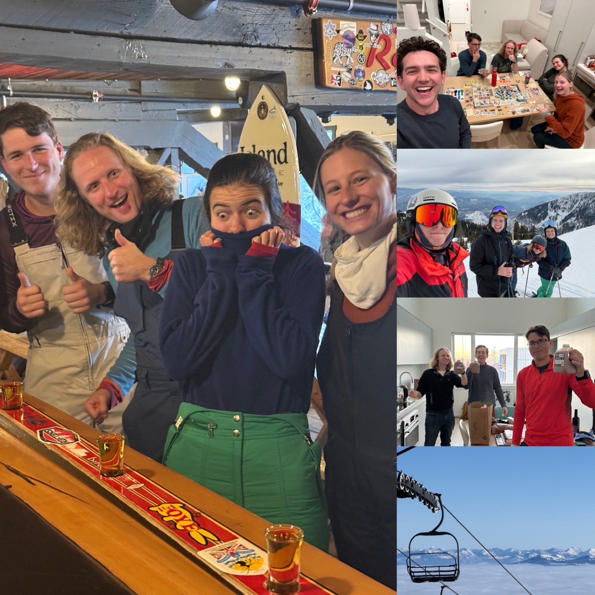
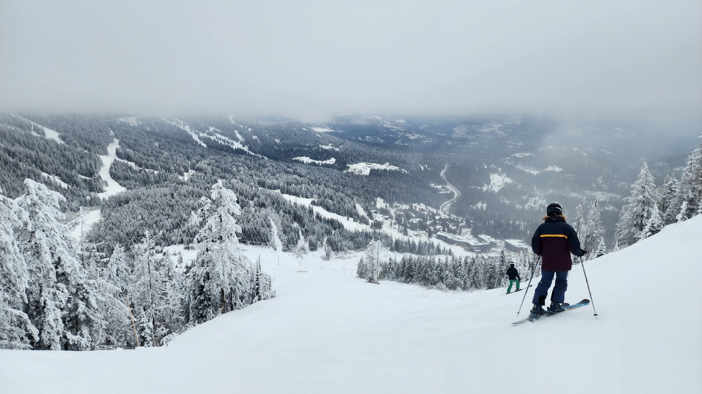
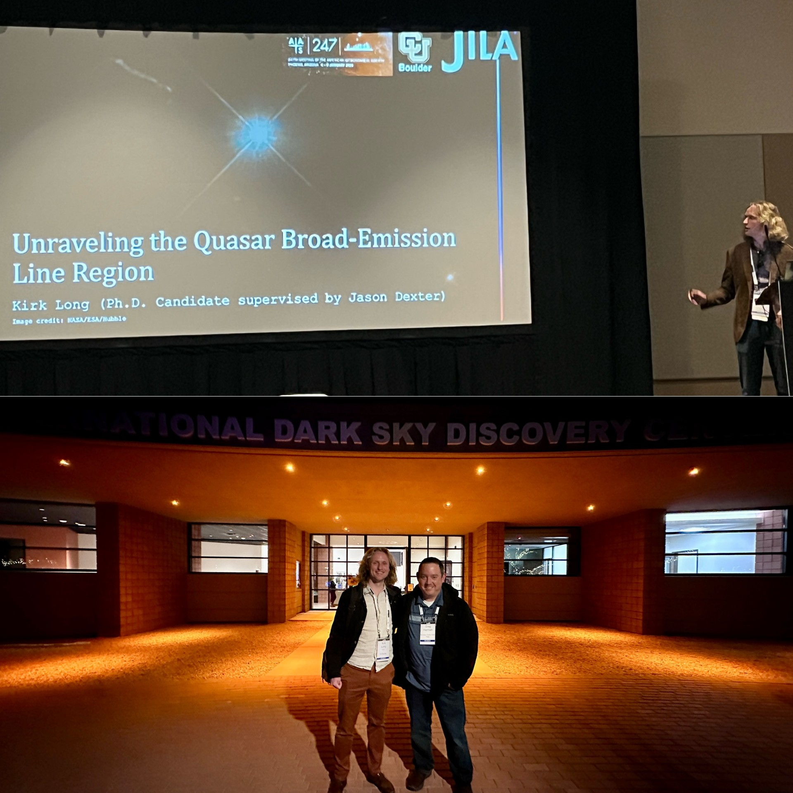

Me at the gate to Peking University, my new home starting in September!
Come to my thesis defense! And also a short July 2025 - March 2026 life update
First off, my Ph.D. is finally coming to a close, and I would like to invite you to my defense on March 26th from 3-4 PM Mountain Time! You can attend in person if you want — my talk will be in the JILA Foothills room, which is on the 10th floor of the JILA tower on campus. If you haven't been in JILA before to get up there you have to insert and turn a special key (which should be permanently in the elevator) to unlock the 10th floor. If you can't attend in person but still want to watch it live, I'll have a Zoom set up for friends and family to watch, which you can access here (password is 42, meeting ID is 779 207 7603). At the broadest level my Ph.D. research has focused on improving our techniques for measuring the masses of supermassive black holes in the centers of active galaxies as well as constraining the true nature of the gas that enshrouds these massive black holes. Come find out more at my defense and I hope to see you there either in person or virtually!
The rest of this post is a short life update on what I've been up to for the last few months. The most exciting news is that the reason I am imminently defending my Ph.D. is that I have to graduate ASAP to get a visa for my postdoc starting this fall in Beijing, China! I am super excited to have accepted a four year position working in the IR interferometry group that is jointly in Beijing and Munich, Germany. I'll get to spend two years in China and then two years in Germany for this position, which is really exciting for me as it has always been a life goal of mine to live in another country. Ayla and I have hired a Chinese tutor and we're doing our best to learn Mandarin. If all goes well with the visa process I will likely move to Beijing in early September. As part of the interview process, they flew me out to Beijing for a week in January, so I've included a few photos/videos of that trip in a ~1min montage below. Because the trip was so last minute I couldn't get a visa, but luckily there is an interesting loophole in China where you don't need a visa as long as you are using the country as an extended layover for less than 10 days on your way to another country. So I also got to spend a few days in Japan skiing on the way home and there are some photos/videos of that trip below as well!
Backing up even further, I closed out last summer with a bunch of international travel. In August I had a super fun weekend visiting Benoit in Montreal, where we went to a soccer game and had a lot of amazing food (including poutine, of course). I also got to see my old Brazilian friends Bruno and Ellen who happen to live in Montreal now, along with their super cute new baby Cecilia! Then I spent pretty much all of September in Europe, where I had the opportunity to attend a conference in Cambridge in the UK, give talks in Scotland and Germany, and my friend Dakota and I spent a week hiking most of the Walkers Haute Route from Mt Blanc in France to the Matterhorn in Switzerland! You can ski 365 days a year on the Matterhorn glacier, so of course I had to ski there to celebrate finishing the hike. At the end we met up with Pravita in Munich and went to Oktoberfest which was crazy.
In October Ayla and I got to see some of our favorite friends Pat and Noora get married, and also participate in a mini APS reunion as many of our department friends were there as well. Pat is from Asheville, North Carolina, and so we got to spend an amazing few days enjoying the beautiful fall colors in the mountains there celebrating their love! Ayla passed her comps at the end of October as well, so there was a lot to celebrate.

In November Ayla, Drake, and I road-tripped to California through Utah for Thanksgiving. We had a lot of fun hiking with Drake's family in Utah where we dropped him off, then Ayla and I continued to California. I spent a few days in the Bay Area with her family, and we got to go to the Monterey Bay Aquarium and get a behind the scenes tour from one of her friends that works there which was super cool and we got to touch a jelly fish! I went to southern California to see my grandmas for Thanksgiving proper and take in a great day at the beach which was lovely as always. Then on the drive back we skiied at Mammoth for the first time and stayed in a Casino hotel in Nevada where Ayla turned \$1 into \$20 thanks to the gold fish bonus (but not until after we had turned \$40 into \$1). Finally we got to see some more friends/family in Utah before arriving back in Boulder.

In December my family came to visit for the holidays which was really sweet! My mom bought everyone of the kids two day IKON passes, so I took them skiing at Copper Mountain on Christmas Day and then we took the ski train to Winter Park the day after. I taught the beginners in my family as best I could and everyone did a great job skiing! We had a cute Christmas together at my house, including Ayla and I helping everyone making stained glass ornaments, nice dinners cooked by everyone, and a screening of the latest Knives Out movie in my ``home theater''. As a Christmas gift to myself I bought a model train to go around the tree, which I'm now trying to build a diorama of the mountains around Boulder for it to go through. We also went on a really beautiful hike in Rocky Mountain National Park to ice skate on frozen Dream Lake!
In addition to going to China and Japan in January Ayla, Drake, James, Riley, and I also went on a mini ski trip at RED Mountain in British Columbia, Canada. They had a great deal on lodging so we had a practically ski-in ski-out condo which was super nice, and the nearby town of Rossland was really cute and happened to be having their winter festival the same weekend we were there to ski! We got to see some cool ice sculptures, a parade, terrain park competition in one of the streets of the town, and we got to try curling for the first time! This was well-timed with the Olympics this year and we all gained a new appreciation for how hard curling actually is. This was a super fun trip and I hope to go back again soon!


I also gave my dissertation talk at the AAS meeting in Phoenix in early January, where I ran into some old friends from Boise including my favorite Observatory co-worker Greg. I'm going to go back to Boise to give the First Friday talk in July, and I'll also visit the observatory one more time that weekend to say goodbye before I head off to China, so if you're around in Boise that weekend (or want to visit Boise that weekend) let me know and I would love to see you then!

The last two months have been more low key, as I found out I got this job and realized I had to write my thesis in just a few weeks so I could graduate in May... But we've been trying to get out and enjoy the best of our pretty bad ski season (I've had a lot of fun teaching my friend Abdullah this year), and have been using the warm days to do some crafts outside like pottery and stained glass! We also recently had another visit to Utah to ski and meet my Mom's new fiance Andrew, who is super nice and we are really excited to go back for the wedding in May. Finally, I'm writing this next to my long-time best friend Nika, who came to visit me for a long weekend where we took the ski train, got to experience a random real winter powder day at Eldora (very lucky, as there have been maybe two of those this whole season), and just hang out and catch up which has been so nice! In addition to these fun times in this final collage I'm including a few more random favorite photos from the past few months that didn't fit in with any of the previous sections
That's all for now! I hope you enjoyed this life update, and I hope to see you at my defense on March 26th!